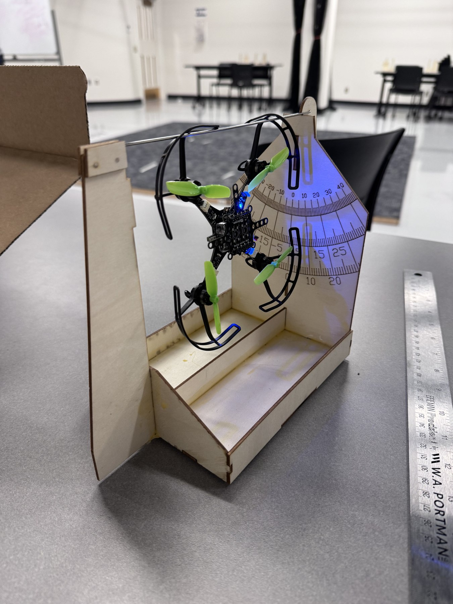
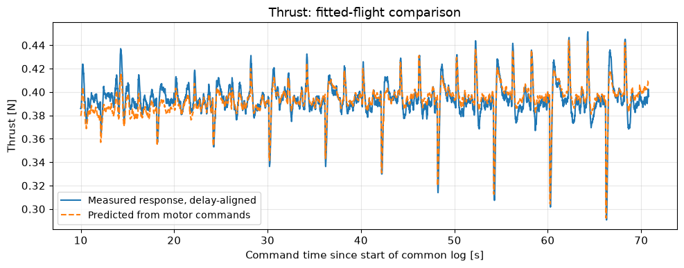

In progress / AE483 / Autonomous systems / Proposal and early development
University of Illinois Urbana-Champaign · AE483 Autonomous Systems Lab · Fall 2026
Robust attitude control under partial motor impairment
Aging teaching drones can produce unequal motor output. Our proposed project asks how much partial motor impairment a Crazyflie can tolerate while maintaining stable attitude, and whether revising the motor allocation improves control under the same impairment.
- My contribution
- Team project development and laboratory modeling, calibration, and controller preparation. The final-project observer and quaternion controller are planned team implementations; individual final-project responsibilities are still being established.
- Tools
- Inertial estimation · Quaternion control · Motor allocation · Python / embedded C
- Current status
- Project proposed; recorded labs support the model. Impaired-motor control and the final flight evaluation are upcoming.

Test partial impairment with a controlled comparison
We will apply a small, reversible reduction to one motor command to emulate reduced output. Our team plans to implement its own attitude observer from onboard inertial measurements and a quaternion-based attitude controller. The baseline is the power-distribution matrix from Lecture 6, which maps motor commands to total thrust and body torques.
We will adjust that allocation for the weakened motor while respecting motor-command limits, then compare normal and impaired conditions using peak attitude error, settling time, steady error, and command saturation. The hypothesis is that the revised allocation reduces attitude error under the same impairment. More severe impairment may exceed the available control authority; the project will determine a compensable range rather than assume recovery from complete motor failure.
Time permitting, a secondary study will investigate whether flight data can identify each motor’s thrust and torque coefficients, Kf and Km. This is an optional extension, not a completed capability.
Use the course labs to establish the physical model
Labs 1–2 retain flight recordings, coordinate-frame transformations, and motion-capture alignment work. These checks establish how recorded poses and onboard estimates can be compared during validation. The proposed final controller will use onboard inertial sensing; external motion capture in the labs is a measurement reference.
Lab 3 estimates the assembled drone’s 40 ± 1 g mass and three moments of inertia with a pendulum rig. The approximate propagated inertia uncertainties are substantial—about 54% for x and 51% for y—and the z recording has appreciable cross-axis motion. These limits matter when deciding how much confidence to place in a model-based controller.
Lab 4 contains real force and moment flights, motor geometry, alignment checks, and regression fits. The saved force model estimates Kf ≈ 2.38 × 10⁻⁶ N per command unit with a 35 ms fitted delay and R² ≈ 0.79. The yaw-torque fit has R² ≈ 0.18 and large cross-axis motion, so Km remains provisional. These are aggregate lab coefficients; they do not establish separate coefficients for all four motors.
Lab 5 prepares three controller models: feedback without actuator delay, with delay, and with delay plus integral action. The retained parameters file still lacks adopted motor coefficients, and no final demonstration log is saved there. The prepared models and firmware therefore support the next test step without establishing validated project flight performance.




Advance through three project checkpoints
The project is in early development. These dates describe planned demonstrations and analyses, not completed results.
- October 23Demonstrate a simulation with an attitude observer and quaternion controller, plus stable physical flight with normal motors.
- November 6Implement allocation for a weakened motor and simulate several impairment levels.
- November 20Determine the impairment range the controller can compensate for and compare the agreed performance metrics.
Implement on an open flight-control platform
The local firmware target is Crazyflie 2.1 Brushless. Bitcraze specifies an STM32F405 flight processor, onboard accelerometer and gyroscope, and four brushless motors. This gives us an accessible embedded platform for estimation, feedback control, motor allocation, and synchronized logging.
AE483’s public crazyflie-client repository supplies Python flight and analysis interfaces and starter lab notebooks. The companion course firmware provides the onboard controller integration. The project builds on those course interfaces; its contribution will be the custom observer, quaternion controller, impairment-aware allocation, and measured comparison.